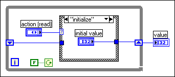
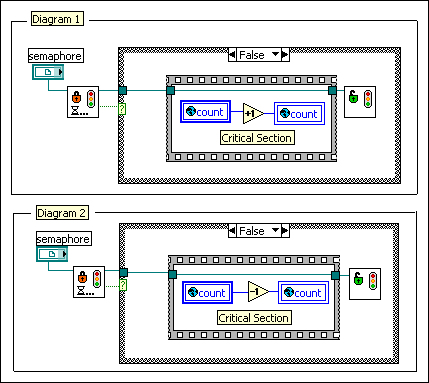

In most applications, it is not necessary to use priority levels or an execution system other than the Standard execution system, which automatically handles the multitasking of the VIs. By default, all VIs run in the Standard execution system at Normal priority. In a multithreaded application, a separate thread handles user interface activity, so the VIs are insulated from user interface interaction. In a single-threaded application, the execution system alternates between user interface interaction and execution of the VIs, giving similar results.
In general, the best way to prioritize execution is to use Wait functions to slow down lower priority loops in the application. This is particularly useful in loops for user interface VIs because delays of 100 to 200 ms are barely noticeable to users.
If you use priorities, use them cautiously. If you design higher priority VIs that operate for a while, consider adding waits to those VIs in less time-critical sections of code so they share time with lower priority tasks.
Be careful when manipulating global variables, local variables or other external resources that other tasks change. Use a synchronization technique, such as a functional global variable or a semaphore, to protect access to these resources.
Because the execution system can run several tasks in parallel, you must make sure global and local variables and resources are accessed in the proper order.
You can prevent race conditions in one of several ways. The simplest way is to have only one place in the entire application through which a global variable is changed.
In a single-threaded application, you can use a Subroutine priority VI to read from or write to a global variable without causing a race condition because a Subroutine priority VI does not share the execution thread with any other VIs. In a multithreaded application, the Subroutine priority level does not guarantee exclusive access to a global variable because another VI running in another thread can access the global variable at the same time.
Functional global variables are non-reentrant VIs that use loops with uninitialized shift registers to hold global data. A functional global variable usually has an action input parameter that specifies which task the VI performs. You can use functional global variables to protect critical sections of code that access the action on a variable, which can help avoid the race conditions associated with global variables. With global variables, when you read the value of a variable, modify that value, and then write the value back to the variable, race conditions can occur because two pieces of parallel code that read the same variable at the same time can overwrite the changes that the other introduces. Use functional global variables to protect actions that modify data. For example, functional global variables can prevent race conditions for critical sections containing actions that read, increment, and write data to memory or actions that update a database or modify a file.
The following illustration shows a functional global variable that implements a simple count global variable. The VI uses an uninitialized shift register in a While Loop to hold the result of the operation. The actions in this example are initialize, read, increment, and decrement.

Every time you call the VI, the block diagram in the loop runs exactly once. Depending on the action parameter, the case inside the loop initializes, does not change, incrementally increases, or incrementally decreases the value of the shift register.
Although you can use functional global variables to implement simple global variables, as shown in the previous example, they are especially useful when implementing more complex data structures, such as a stack or a queue buffer. You also can use functional global variables to protect access to global resources, such as files, instruments, and data acquisition devices, that you cannot represent with a global variable, since calls to the functional global variable execute sequentially unless you mark the VI as reentrant.
You can solve most synchronization problems with functional global variables, because the functional global VI ensures that only one caller at a time changes the data it contains. One disadvantage of functional global variables is that when you want to change the way you modify the resource they hold, you must change the functional global VI block diagram and add a new action. In some applications, where the use of global resources changes frequently, these changes might be inconvenient. In such cases, design the application to use a semaphore to protect access to the global resource.
 Data Communication Methods Home
Data Communication Methods Home
A semaphore, also known as a mutex, is an object you can use to protect access to shared resources, such as global variables. The code that accesses the shared resource is called a critical section. A semaphore protects access to a critical section by allowing only a certain number of tasks to acquire access to the semaphore at the same time. In general, you want only one task at a time to have access to a critical section protected by a common semaphore. However, it is possible to configure a semaphore to permit more than one task (up to a predefined limit) to access a critical section.
Most use cases for semaphores require the following steps:
 |
Note��Some advanced uses of semaphores do not acquire and release the semaphore in the same section of code. |
Refer to the Simple Semaphore VI in the labview\examples\Synchronization\Semaphore directory for an example of using the Obtain Semaphore Reference VI and the Release Semaphore Reference VI.
 Open example�
Open example�
 Find related examples
Find related examples
The following illustration shows how you can use a semaphore to protect the critical sections. Another VI created the semaphore and passed the reference to these subVIs. The semaphore has a size of 1, so only one task can access the semaphore at a time.

Each of the previous block diagrams contains a critical section that accesses the same global variable, count. Therefore, the block diagrams share the same semaphore. Before either block diagram executes its critical section, it calls the Acquire Semaphore VI to detect if the other diagram already acquired the semaphore. If the semaphore is busy, the Acquire Semaphore VI waits until the semaphore becomes available. When the semaphore becomes available, the Acquire Semaphore VI returns FALSE for timed out, indicating that the block diagram has permission to execute its critical section. When the block diagram finishes executing its critical section, the Release Semaphore VI releases the semaphore, permitting another waiting block diagram to resume execution.
A semaphore remains in memory as long as a top-level VI that is not idle owns a reference to the semaphore. If the top-level VI becomes idle, LabVIEW releases all semaphore references the VI owns, including references that exist in subVIs of the top-level VI. If LabVIEW releases the last reference to a named semaphore, LabVIEW destroys the semaphore. Because you can obtain only one reference to an unnamed semaphore, LabVIEW destroys an unnamed semaphore when the top-level VI becomes idle. To use a semaphore across multiple top-level VIs, name the semaphore and call the Obtain Semaphore Reference VI from each top-level VI so that each VI obtains its own unique reference to the semaphore.